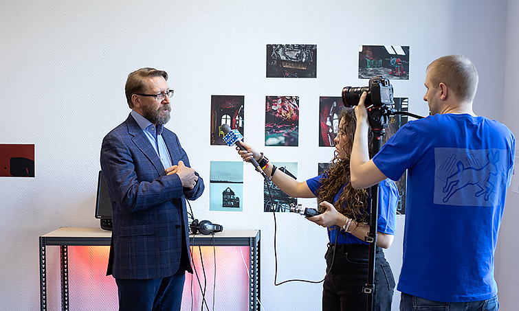
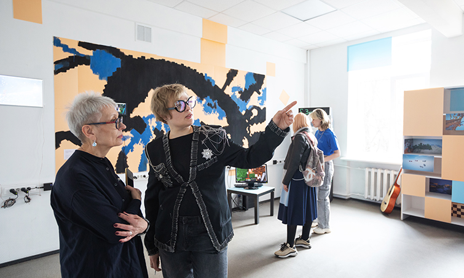
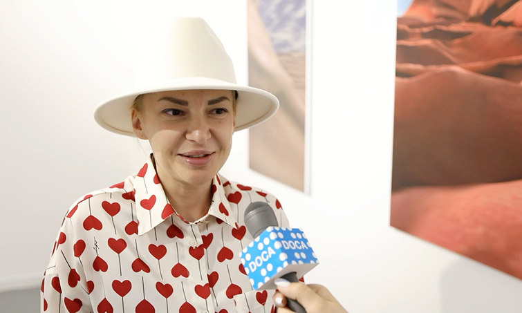

ЗАГОЛОВОК САМОГО ЛУЧШЕГО САЙТА
«Я люблю современное искусство и много хожу на разные выставки. Фестиваль DOCA стал лучшим, что я видел за последнее время. Впечатляет обилие интерактивных объектов. Они представляют собой не часть выставки, а полностью заполняют выставочное пространство, превращая его в большую интерактивную зону, открытую для взаимодействия зрителя с искусством».
  